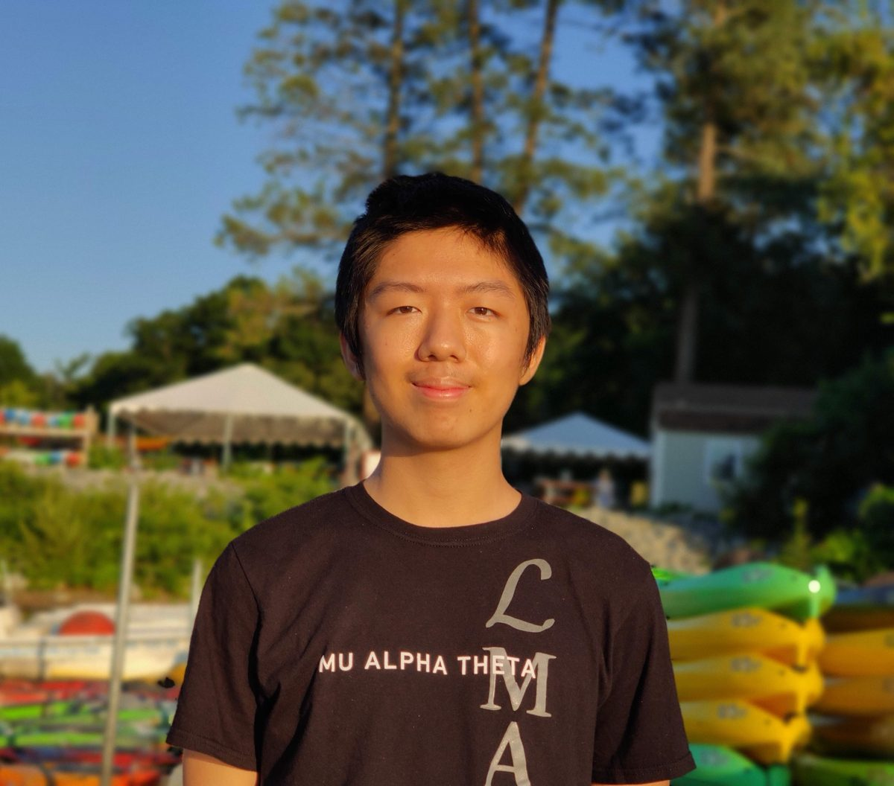

Jared Yang · Mechanical engineer
Hi, I'm Jared. I design and build hardware: 3D printers, robots, and the tools around them.
Mechanical engineer with a computer science background. I'm drawn to product design, consumer technology, and automation, and I measure my work by the effect it has on the people who use it.
Selected work
Projects I've designed, built, and tuned.
Mostly hardware: printers, a competition robot, and lab tooling. Each one has a short write-up with photos.
-

Voron 2.4 3D Printer
Assembled from a bare kit and tuned until it could print a high-quality Benchy in under 30 minutes.
-

Vex Tower Takeover Robot
The competition robot I led as captain of 285Z: four fold-out mechanisms and a state skills championship.
-

Heated Nozzle Enclosure
An aluminum heater block that brings a gantry-mounted nozzle to 90 °C for printing viscous lab-made materials.
-

Magnetic Self-Assembly Model
3D-printed linkages with precisely oriented magnetic dipoles, built to physically simulate self-assembling networks.
-

3D Printed Sample Rack
A two-part, hot-swappable rack for sample vials, built in interference-fit and magnetic versions.
About
A little about me.

Hello, and welcome to my website. I'm Jared, an engineer who studied mechanical engineering and computer science at Northwestern.
I'm passionate about product design, consumer technology, and automation, and I want to build a career around innovation in the technology sector. I'm a passion-driven person, and I measure the impact of my work by the effect it has on others, which is why I gravitate toward product design.
At the moment I'm at Formlabs as an R&D Engineering Intern, collecting and analyzing data to validate and improve the next generation of SLA printers.
In my free time I like hiking around lakes, playing ping pong, and riding my electric scooter.
- Currently
- R&D Engineering Intern, Formlabs
- Education
- B.S. Mechanical Engineering, Northwestern
- Based in
- Arlington, MA
Experience
Where I've worked.
A brief overview of my background. Happy to share a full résumé on request.
-
Jan 2023 – Present
R&D Engineering Intern
Formlabs · Somerville, MA- Develop and evaluate the next generation of Form SLA 3D printers as part of the Print Process R&D team.
- Optimize printer algorithms through data analysis, R&D experimentation, and debugging.
-
Sep 2022 – Present
Undergraduate Researcher
Robotic Matter Lab · Evanston, IL- Explore new applications for in-house soft materials in soft robotics and bio-inspired mechanisms.
- Prototyped a heated enclosure for a pressurized nozzle on a 3-axis gantry, enabling 3D printing and alignment of liquid crystal elastomers.
-
Mar 2022 – Sep 2022
Research Intern
Sun Research Group · Evanston, IL- Modelled and optimized projection-based micro-SLA 3D printers using DLP and CLIP technology.
- Built a Voron 2.4 from scratch and tuned slicer profiles, input shaping, and pressure advance for print quality and speed across materials.
- Developed micro-textured PDMS and glass printing surfaces to enable large-format continuous SLA printing.
Education
-
2020 – 2024
B.S. Mechanical Engineering, Minor in Computer Science
Northwestern University · Evanston, ILCoursework: System Dynamics, Materials Selection, Manufacturing, Heat Transfer, Differential Equations, Statics, Electronics Design, Data Structures and Algorithms, Web Development, Artificial Intelligence, Object-Oriented Programming, Computer Systems.
-
2016 – 2020
High School Diploma
Carnegie Vanguard High School · Houston, TXRobotics Club (captain and chief engineer of team 285Z), Mu Alpha Theta, Interact Club, National Honor Society, Ping Pong Club.